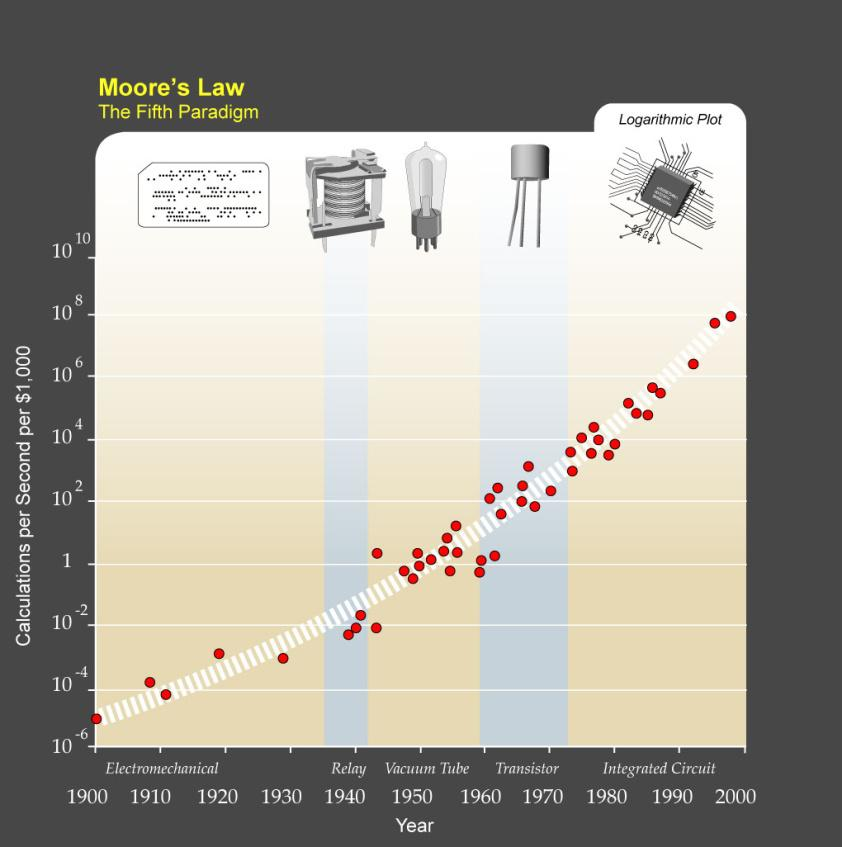
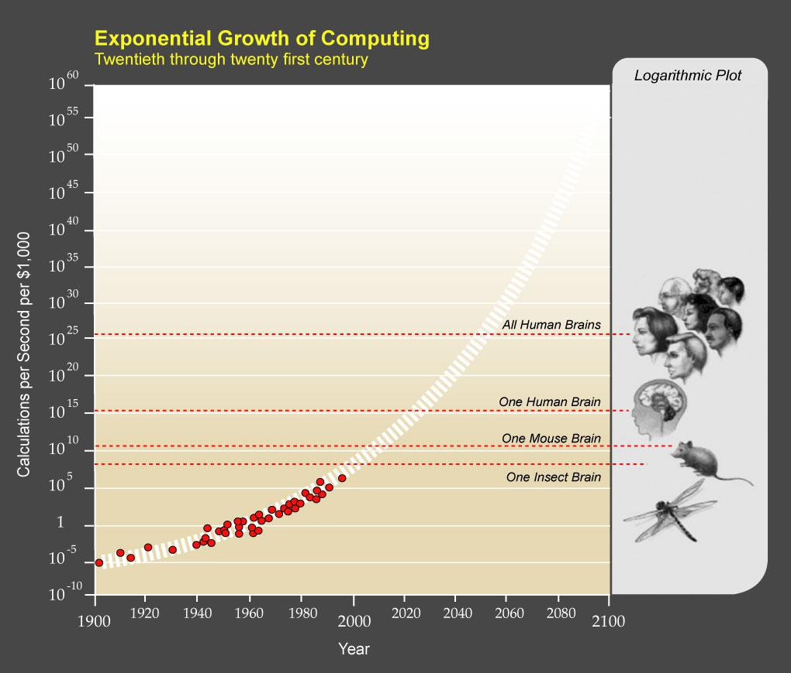
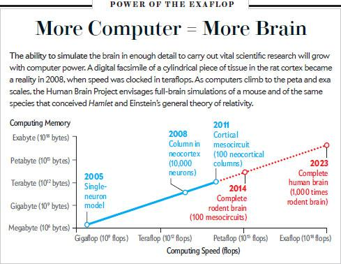

急速に発展した人工知能が人間を遥かに超える知能を獲得した未来。人類は脳とコンピュータを接続して知能を拡大していた。主人公は過去の人間やキャラクターの人格をシミュレートし、“芸術品”として扱っているのだが、最近になりシミュレーション人格にも人権を与えるべしという動きが盛んになっていた。そのことが気に入らない主人公は、シミュレーション人権運動を潰す戦略を探るために自分のシミュレーションを複数作り、一番良い戦略を見つけたもの以外は消去すると教え、競争させるという方法をとった。シミュレーション内の主人公たちは、よい戦略を探るために、更に自身のシミュレーションを作り、競争させていく。その方法はうまくいったように思えたのだが、ある日、主人公自身もシミュレーション人格であったことが明らかにされる。
この小説を読んだ感想を順に話し合おう（読んでない人はあらすじを読んだ感想、ＡＩ・コンピュータ技術に対して思うところ、小説のような未来がやってくるかどうか、などを語ってください）
まずはこのスピーチを見てほしい。これはシンギュラリティのスポークスマンともいえるレイ・カーツワイルのＴＥＤスピーチである。
http://www.ted.com/talks/lang/ja/ray_kurzweil_announces_singularity_university.html
シンギュラリティの基本的アイディアは『テクノロジーの発展は線形的ではなく指数的』だということだ。そのため、ＡＩの情報処理能力は今後20年の内に人間脳に追いつき、その後も爆発的に発展し続け、ついには人類すべての脳を合わせたものより大きくなる（この時点をシンギュラリティとする）。シンギュラリティの後、その能力をもってＡＩたちは新たなテクノロジーを生み出し続け、その後の発展は限られた情報処理能力しか持たない現代の人間には予想すらできないものとなる。
コンピュータの指数的成長を示す有名な例はムーアの法則である。これはインテル社のゴードン・ムーアにより唱えられた経験則であり、「集積回路上のトランジスタ数は18カ月ごとに倍になる」というものだ。カーツワイルはこの法則を改良し、集積回路を用いる以前から見ても、情報処理機械の能力は指数的に増大していることを明らかにした。（下図）
集積回路上に置けるトランジスタ数は限界があるため、ムーアの法則は将来には破綻すると言われているが、カーツワイルによると新たな技術のパラダイムシフトが起きるので、今後も続いていくそうだ。


網膜の画像処理神経回路は毎秒1000万回の動きを検出する。1回分をコンピュータ上に再現するには約100回のコンピュータ命令が必要。つまり、網膜画像処理神経回路を再現するには毎秒10^9回コンピュータ命令 (cps) できればよい。この神経回路と比較して脳は約7万5000倍重い。したがって、脳全体のコンピュータ命令は毎秒約10^14回。
聴覚の位置測定機能をコンピュータでシミュレート→10^11cps
脳全体の機能を実現するためには10^14cps (10^11 cps × 10^3)
10^4のニューロンを持つ小脳の一領域での機能をコンピュータでシミュレート→10^8cps
これを10^11のニューロンを持つと推測される脳全体に適応すると10^15cps
脳全体のニューロンの数は10^11個、ニューロンひとつあたりの結合数は10^3、よって脳全体で約10^14個の結合がある。リセット時間が0,0005秒なので、脳全体のシナプス処理数は毎秒およそ10^16。
樹状突起など、複雑な相互作用を考慮に入れるとシナプス処理一回あたり10^3の計算が必要なので人間の脳をシミュレートするためにはおよそ10^19が必要。しかし、機能をシミュレートするためには10^14~10^16cpsで十分。
※IBMのスーパーコンピュータ“ブルージーン”は3,6×10^14cpsで、概算値の低い方をすでに超えている。
機能的な記憶の容量全体は10^13ビット（推定値）
個々のニューロン結合レベルでモデル化したら10^18ビット
ローレンス・リヴァモア国立研究所では、2009年にヒトの大脳皮質の1%（ニューロン16億個とその結合9兆個）をシミュレート、ただし、シミュレーション進行速度はリアルタイムの600分の1)
スイス連邦工科大学ローザンヌ校で進行中の『ブルー・ブレイン・プロジェクト』では、ラットの大脳皮質を円筒状にくりぬいた皮質カラム（１万個のニューロン）シミュレーションを2008年に実現。更に2011年には皮質のメゾ回路（100個の皮質カラム）シミュレーションを実現。2014年に完全なネズミの脳、2023年には完全な人間の脳シミュレーションを予定している。（下図）

ハードウェアは指数的に成長する半面、ソフトウェアは人間の試行錯誤の結果できるものだから急速には進歩しない。よってたとえハードウェアが超人間的レベルまで進歩しても、ＡＩは人間並みにならないとする批判。
この批判に対して、カーツワイルは脳スキャン装置の空間解像度・スキャン帯域幅・コストパフォーマンスなどは毎年2倍の指数的成長を遂げており、脳情報は指数的に増え続けている。更にナノテクノロジーの進歩（血球サイズのロボットなど）により2020年までには脳全体をモデル化しシミュレートするのに必要なデータの収集とコンピューティングのツールを手に入れることができると反論している。
現在のトランジスタ小型化速度から計算すると、2020年ごろにトランジスタの大きさは原子レベルまで縮小する。そのサイズでは量子の不確定性のためエラーが大きくなり、使い物にならなくなる。よって、爆発的なコンピュータ発展は2020年ごろに止まり、シンギュラリティは起こらないという批判。
これに対して、カーツワイルは新たなパラダイムに基づいた技術（3次元分子コンピューティング）によりムーアの法則は止まらないと反論する。
人間の知能は脳におけるタンパク質や熱などの物質に固有の性質により創発するものであるため、コンピュータによる計算ではシミュレーションできないとする批判。これに関してはまだよくわかってないためなんともいえない。
身体と独立した知能はありえず、知能を創発するにはリアルタイムで現実世界の環境と相互作用しなければいけないため、コンピュータの情報処理がいくら発展しても知能は生まれないという批判。（知能とは頭のなかにある計算ではなく、環境との相互作用によって現れるものである）
はたして、シンギュラリティは到来するだろうか？到来するとすればいつぐらいだと思う？
シンギュラリティが来るとしたら、それは怖い？楽しみ？なんとも思わない？実感がないのでなんともいえない？
シンギュラリティが来たときあなたはどうするか？（コンピュータと融合する？意識をアップロードする？それともこの肉体のままで一生を過ごす？）
あなたはＡＩ/シミュレーション人間の人権擁護派？非擁護派？
もしも、コンピュータの発展がこのまま続けば、近い将来に完全な人間のシミュレーションができるだろう。そのとき、どのような対応をすればよいか？（例えば、シミュレーション人間を使ってアルツハイマー症の実験をするのは倫理的に問題がないだろうか？）
たとえ、不完全なシミュレーションであろうとも、それは人間に近い存在であろう、ではどこから人間として扱うという線引きをすればよいか？
シミュレーション人間に、自身の生きている世界がシミュレーション世界だということを教えないのは倫理的に問題があるか？
シミュレーション人間の誕生はどのような法的変容を引き起こしていくのか考えてみよう。
（2003年に、国際法曹連盟のバイオサイバー倫理部会で、「意識のある」コンピュータが自身の電源を切らないように申し立てたという設定で模擬裁判を行った）
もしかしたら、自分のいるこの世界がシミュレーションかもしれない。と思ったことはある？
（ニック・ボストロムのシミュレーション仮説：この世界はシミュレーションである可能性が高い、なぜならば、テクノロジーが発達した文明はシミュレーション世界を無数に作るだろう、このとき、「現実世界」と「シミュレーション世界」の比は圧倒的に後者が多くなる。そうすると、我々がいまいるこの世界が現実世界であるよりもシミュレーション世界である可能性が大きくなる）
もしも、自分がシミュレーション人格であったら、そのときどうするか？
もしも、この世界がシミュレーションであった場合、どうやって脱出するか？
もしも、上位世界の存在がこの世界を消去しようと決めたらそれに対抗する手段はあるのか？（なんか面白い行動をやって上位存在を楽しませて消させないようにするとか。上位存在にこの世界を視聴することを依存させる）
シンギュラリティやシミュレーション仮説をテーマにしたＳＦにはなにがあるか？
『人類は衰退しました』はシンギュラリティＳＦか？
感想 こういう競争はいやだなあ 自分がこういう立場に置かれたら頑張らないで消されるだろう 順列都市っぽい こういう状況であれば、3・4世代下のシミュレーションはメモリーが足りなくなるか精度が荒くなるから、シミュレーションの連鎖は無限には続かない もし、一階層上の現実に上ったとしても、そこには他のシミュレーション世界から来たライバルたちと競わなくてはいけないので大変 日本庭園にテクノな神様が出てくるのがうける 「人権」が出てくるのは欧米っぽい←そう？ラギッド・ガールとかもシミュレーション人権問題扱ってたよ たとえ自分の世界がシミュレーションだったとしても、終わったときにはその終わりを知覚できないのでどうでもよい 自分の世界がシミュレーションだった！というのはスターオーシャン３だね。ちなみに、主人公たちは超能力で現実世界に出た。 将来こういう技術ができたら同人誌が全部人格シミュレーションになる たとえこの世界がシミュレーションであろうとも、今生きているこの世界が現実なのだ！と開き直る→『ロゴホライズン』 シミュレーション人格はどこから人権が生じるん？→やっぱりチューリングテストじゃね？ シミュレーション人権が認められるとき、シミュレーション人格が多ければ多いほど有利になるから、〈具象派友の会〉（シミュレーション人権団体）はそれを狙った？ シンギュラリティになったらディックの「ジム・クロウ」みたいにロボットが有利な世界になるかも→それは人間が意識をアップロードすれば解決 三次元分子コンピューティングとは、これまでシート型でしかなかった集積回路を立体にするもの シンギュラリティの批判で、知能とは環境との相互作用であるというものあるけど、たとえそうだとしてもロボット作って学習させればよい、それでシンギュラリティは遅くなるが、やってくることは確かだ。 シンギュラリティはやってくるか？ 賛成 8人 反対 0人 レポーターはこの結果を見てけっこう驚いた。 シンギュラリティは怖いか？楽しみか？ 楽しみ 4人 怖い 2人 理由：今の自分のアイデンティティが好き。シンギュラリティが起こったらいやおうなく機械と融合させられそう（ハードテイクオフへの不安） なんともいえない 2人 意識をアップロードして不死になりたいか？生身の肉体のまま死ぬか？ アップロード派 4人 理由：俺の意識が保存されないなんて世界の損失だから。アップロードして不死になって評論でシンギュラリティをバカにしたい など 肉体派 3人 理由：最後の死者の一人になりたい。 バックアップはとるけどそれは作動させない 1人 ＡＩ人権 擁護派 2人 消極的擁護派 4人（いまはまだわからないけど実際ＡＩができたら多分擁護派になる） 反対派 1人 シミュレーション人権がどこから発生するか？という問題は『ラギッド・ガール』で情報的似姿には人権があるかという話やってたね。 シミュレーション人権の線引きは、その社会状況の都合がいいように線引きされ、ここまでは権利があるけど、この下はなにをやってもいいよってことになるのでは？ →いや、社会権が認められないけど生存権は認めるとか階段型になるのでは？ 実際、ＡＩができたら、トップダウン式で法律変えるのではなくて、ＡＩの訴訟により法律が変わりそう →あさぎ訴訟：生活保護のレベルがめっちゃ低かった時代、この訴訟で生活保護レベルが上がった ・この世界がシミュレーション世界だったら 上位世界に行く価値あるの？どうせ死ぬからいいよ←君は上位存在の手のひらで踊らされていたいのか？上位存在の気まぐれに左右されたくない。 脱出方法 シミュレーション世界のデバッグルームを見つけて外に出る ポケモンフラッシュを起こして視聴している上位存在を殺す 自分をコンピュータウィルスにして他のコンピュータに移っていく 上位存在をこの世界に依存させる、中毒にさせる 上位世界の人権団体に頼み込む この世界でシンギュラリティを起こして、シンギュラリティＡＩと上位存在を対決させる なんとか外部記憶装置にアクセスしてこの世界のバックアップをとる もし脱出させなければ、この世界の計算容量を増大させて、上位世界コンピュータを壊すぞと脅迫する この世界の中で更にシミュレーション世界を増やし、「この世界を消したら、巻き添えで千の世界が滅びるぞ！」といって同情を買う →いや、上位世界ではたくさんシミュレーション走らせてるからそんなの関係ないのでは →上位世界の法律では一つのシミュレーション世界を破壊するのはいいが、千個のシミュレーション世界を破壊するのは刑罰が下るかも 上位世界のテクノロジー進歩が遅かったら、この世界のテクノロジーを発展させてまきかえせる →「クリスタルの夜」